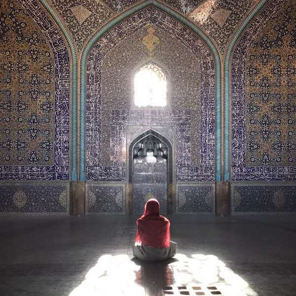

设拉子篇（完） 穿过沙漠、高山，经历了大巴在野外抛锚，我们又是临到夜晚到了设拉子。设拉子的繁华程度堪与德黑兰相比，街边皆是灯火，但似乎人们见识更多，所以在德黑兰走百米之内必有人说“Hello”的情况并未发生。 设拉子的酒店价格也是不菲，昂贵的一晚也要1000刀，对于穷鬼一个的我来说实在是肉痛，我们住在一家有彩 ... »
 伊斯法罕篇 从德黑兰到伊斯法罕的交通方式是乘坐大巴，实际距离三百多公里，但大巴开得实在有些慢，最终我们花费了八个多小时在车上，早晨沐着晨光出门，天际擦黑才来到伊斯法罕。 我们在伊斯法罕住的酒店很值得一说。据说是有好几百年历史的波斯富商的豪宅，拥有开阔的拱形前庭，繁复华丽几何图形凹凸有致，描金的 ... »
大半年之后记忆中的伊朗-德黑兰篇 伊朗之行已过大半年，在我的回忆里渐渐褪色。 对波斯的最初印象来自于童年的游戏似乎叫做波斯王子，后来是温柔多情的波斯明教圣女小昭，记忆中一直无法将大胡子大头巾的伊朗和那个存在于故纸堆里的美丽波斯联系起来，那个新闻里四处事兵荒马乱民不聊生的地方。以至于去伊朗的念头一直被各种劝说质疑， ... »